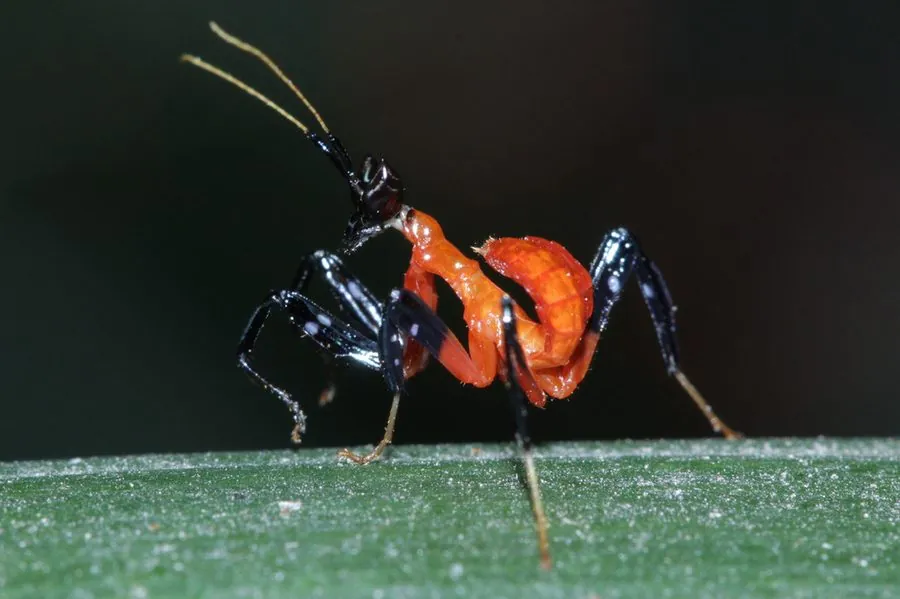

昆虫 · 动物界
兰花螳螂 Hymenopus coronatus

体色粉白、形似兰花的螳螂，伏击在花间捕食传粉昆虫，东南亚雨林分布，是最著名的观赏螳螂之一。
- 分类
- 门节肢动物门纲昆虫纲目螳螂目科螳螂科属花螳属
- 栖息环境
- 东南亚热带雨林的花丛与灌丛，常停在花朵上伏击
- 地理分布
- 马来西亚、印度尼西亚、泰国等东南亚地区
- 保护级别
- 暂无评估；受宠物贸易采集影响
物种志
兰花螳螂雌虫体长约 6–7 cm，雄虫明显更小，约 2–3 cm。它的中足和后足宽大如花瓣，体色白中带粉，有时呈淡黄或淡褐色，头胸部和腹部也有花瓣状突起，停在兰花或白花间时极难分辨。
它是伏击型捕食者，常停在花朵上等待蜜蜂、蝴蝶等传粉昆虫靠近，再猛然出击；幼体体色偏红，随蜕皮逐渐变成粉白色。兰花螳螂分布在东南亚的热带雨林，包括马来西亚、印度尼西亚、泰国等地，喜欢湿润、植被茂密的林下环境。雌雄体型差异悬殊，交配时雄虫必须小心接近，否则可能被雌虫当作猎物吃掉。它因外形优美成为昆虫摄影和宠物贸易中的明星，野生个体面临过度采集的压力。
形态与习性
- 食性伏击捕食蜜蜂、蝴蝶等传粉昆虫
- 体长雌虫约 6–7 cm，雄虫约 2–3 cm
- 拟态体色粉白，足宽如花瓣，形似兰花
- 生活史幼体偏红，随蜕皮逐渐变为粉白色
- 分布东南亚热带雨林
- 观赏昆虫摄影和宠物贸易中的明星物种
趣味知识
- 兰花螳螂的足宽大如花瓣，停在花上时几乎与环境融为一体。
- 雌雄体型差距很大，雄虫只有雌虫的一半左右。
- 它因外形优美而受到宠物贸易追捧，野生种群因此承受压力。